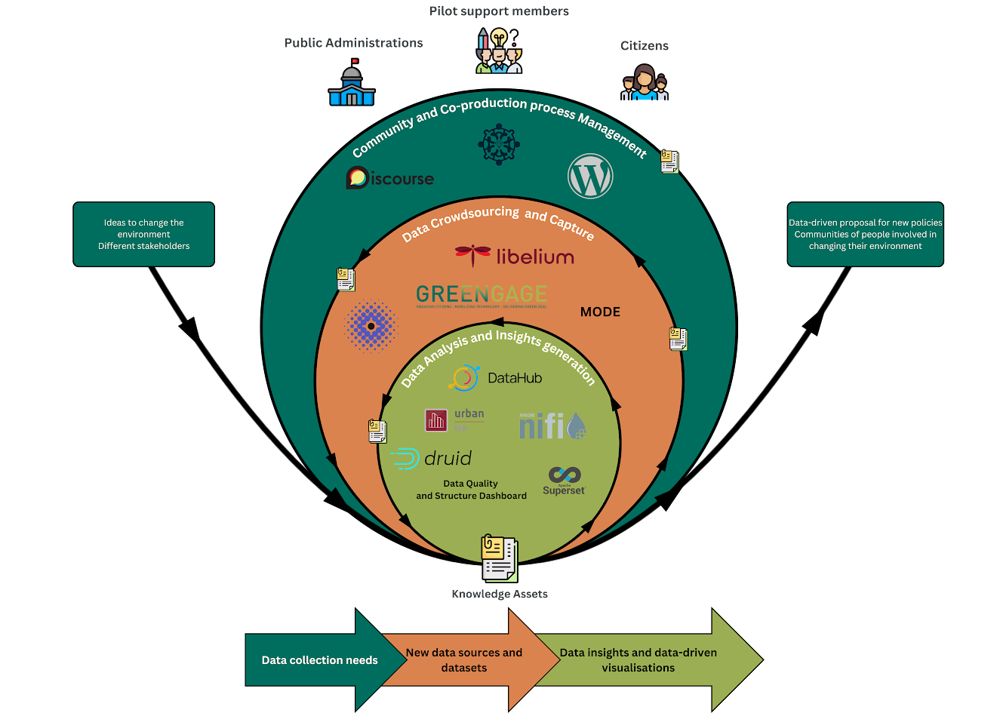

Completion of a Citizen Science Loop with GREENGAGE
Importance of completing Citizen Science loop in thematic co-explorations within Citizen Observatories
Citizen Observatories (COs) empower individuals to actively participate in data collection and environmental monitoring to address local challenges. The GREENGAGE project, under the Horizon Europe framework, aims to enhance the efficacy and more widespread adoption of COs by providing a structured Citizen Science Loop methodology operationalized by a co-production process which is enabled by its GREEN Engine infrastructure. One core contribution brought forward by GREENGAGE is the “thematic co-exploration” concept. A thematic co-exploration, in the context of COs, refers to a collaborative approach where citizens actively participate alongside scientists and other stakeholders in exploring specific themes or topics related to environmental monitoring and observation. Through them, COs are made purposeful by leveraging the collective efforts of individuals, often non-scientists, to gather, share, and analyse environmental data, typically facilitated by digital tools and technologies.
This documentation describes the validation of the GREENGAGE co-creation process for thematic co-explorations, through a university campus based thematic co-exploration, which results in the execution of the following 6 steps of a Citizen Science loop, namely: a. problem identification – recognizing research questions or societal challenges suitable for public engagement; b. campaign design – developing participatory protocols, data collection methodologies, and toolkits for citizens’ engagement; c. data crowdsourcing – enabling citizen scientists to gather good quality observations via digital applications, sensors, and surveys, through data crowdsourcing activities; d. data analysis & interpretation – employing AI-driven tools for insight extraction and thus making humanly meaningful the data modelled; e. feedback & collective learning – validating findings with humans and providing participants with actionable feedback; and f. action & impact - informing policies, creating solutions, and refining methodologies for future CS campaigns exploring similar or complementary thematic co-explorations.
In a thematic co-exploration, the focus is on a particular theme or subject matter, such as air quality, water pollution, biodiversity, or climate change phenomena. The key aspects of this approach include:
- Collaborative Research: Citizens collaborate with scientists, environmental experts, policy-makers, and other stakeholders. This collaboration is not just about data collection but also involves jointly defining research questions, methodologies, and analysis.
- Citizen Engagement: Citizens are not merely data collectors; they are integral to the research process. They contribute through observations, local knowledge, and experiences, thereby adding valuable context and richness to scientific data.
- Mutual Learning: There is a reciprocal transfer of knowledge. Scientists can learn from the lived experiences and local knowledge of citizens, while citizens gain a better understanding of scientific methods and environmental issues.
- Empowerment and Ownership: By engaging in the research process, citizens gain a sense of ownership and empowerment. This can lead to increased awareness and action on environmental issues at the local level.
- Technology Use: Digital tools such as mobile apps, collaborative online platforms, and sensor technologies, e.g. wearables, often facilitate thematic co-exploration. These tools enable easy data collection, sharing, and visualisation.
- Community Building: This approach fosters community engagement and networking, as it brings together people with shared interests in specific environmental issues.
- Policy Impact: The insights gained from thematic co-exploration can inform environmental policies and decision-making processes, making them more reflective of local needs and conditions.
In summary, a thematic co-exploration in Citizen Observatories represents a participatory, inclusive approach to environmental research and monitoring, emphasising collaboration, mutual learning, and community engagement.
Citizen Observer Journey
In GREENGAGE, we propose a Citizen Observer Journey that represents the pathway that the citizen observers follow when conducting a thematic co-exploration. This journey is a structured pathway designed to empower citizens and stakeholders to actively engage in environmental observation and decision-making processes. It unfolds in three distinct yet interconnected phases, each integral to the overall success and impact of the GREENGAGE thematic co-explorations. These phases are:
- Community and Co-production Process Management: Throughout this phase, the emphasis is on building a strong, informed, and active community which collaborates through a co-production process.
- Data Crowdsourcing and Capture: Based on the groundwork of the previous phase, e.g. definition of hypothesis, research questions formulation or datasets selection, among others, this phase materialises into concrete data collection activities. It is characterized by active participation, leveraging technology to gather vital environmental data.
- Data Analysis and Insights Generation: In this phase the collected data is transformed into actionable insights. This phase is where the data, once transformed in actionable information, becomes a powerful tool for understanding and influencing environmental policy.
The following figure shows the Citizen Observer Journey and the tools that are used in the different phases that it comprises:

Example of a simple thematic co-exploration
This example explains the steps to conduct a complete thematic co-exploration process using some of the tools provided by the GREENGAGE platform. To support the explanation, we will employ a video, however, in the video there are only covered the steps belonging to the third phase of the Citizen Observer Journey. Thus, we will complement the video with a textual explanation of the steps covered in the first and second phases.
Objective
The main objective of this thematic co-exploration is to analyse the air quality data from the city of Bristol. The analysis is conducted to identify the air pollution in the city and the different factors that may affect it. Thus, we gather the data from the different sensors deployed in the city and load them into the database. Then we analyse the data and create visualisations to facilitate the understanding of the data. Finally, we load the data and visualisations into the data catalogue to facilitate the access to them and foster the dissemination and adaption of the results to maximize impact.
Dataset
For this example we employed a single dataset from the Air Quality Data Continuous dataset. This dataset contains the air quality data from the city of Bristol. The data is collected from the different sensors deployed in the city. The data is collected every hour and it is stored in the dataset. The dataset contains the following fields:
- Date_Time
- Site_ID
- NOx
- NO2
- NO
- PM10
- O3
- Temperature
- ObjectId
- ObjectId2
- NVPM10
- VPM10
- NVPM2_5
- PM2_5
- VPM2_5
- CO
- RH
- Pressure
- SO2
Note that not all the fields are present in all the rows.
Video
Some of the steps below are linked to the time in the video where they are covered. You can find the video in the following link or by clicking on the image below:
Steps covered in this thematic co-exploration
-
Thematic co-exploration specification: In this step, we should specify the thematic co-exploration that we want to conduct. By employing the Collaborative Environment tool, the thematic co-exploration owners may specify the phases, objectives and tasks that should be conducted in the thematic co-exploration. Furthermore, the tool allows to specify the different roles upon which they will participate in the thematic co-exploration and the users assigned to each role.
-
Community building: Through Discourse and Wordpress tools, the thematic co-exploration owners may create a community around the thematic co-exploration. The community thus could discuss the different aspects of the thematic co-exploration and the different tasks that should be conducted. Furthermore, through it the community should share the results of the thematic co-exploration and discuss them.
-
Data collection: In this step, we collect the data from the different sensors that deployed in the city. In this example, we use the Apache NiFi tool to collect the data from the open API because it cannot be accessed by Apache Druid directly. Thus, we created a NiFi flow that iteratively gathers the data from the API and stores in a local file. However, in another scenario, tools as MindEarth, MODE or GREENGAGEs IoT sensors could be used to collect the data.
-
Data ingestion and storage: In this step, we ingest the data from the local file to the database. In this example, we use the Apache Druid datastore tool to ingest the data from the local file.
-
Data visualisation and dashboard creation: In this step, we load the data from the database into Apache Superset to create visualisations that may support the decision-making process. Furthermore, we create a dashboard aggregating the different visualisations to facilitate the understanding of the data. This visualisations, alternatively, can also be created using the Data Quality Dashboard tool.
-
Data catalogue: In this step, we add references to the data and the visualisations created in previous steps to the DataHub tool. DataHub allows to create a catalog of data that shows the schema, documentation, lineage, properties and common queries that can be done to the data. Furthermore, the visualisations can also be referenced from this catalog and the connections between them can be established. It is a good tool where a given thematic co-exploration results can be traced.
-
Insights generation: In this step the participants of the thematic co-exploration analyse the data and the visualisations generated from it and extract insights from it. These insights may be shared with the community by using the tools covered in the Community and Co-production Process Management phase of the Citizen Observer Journey.